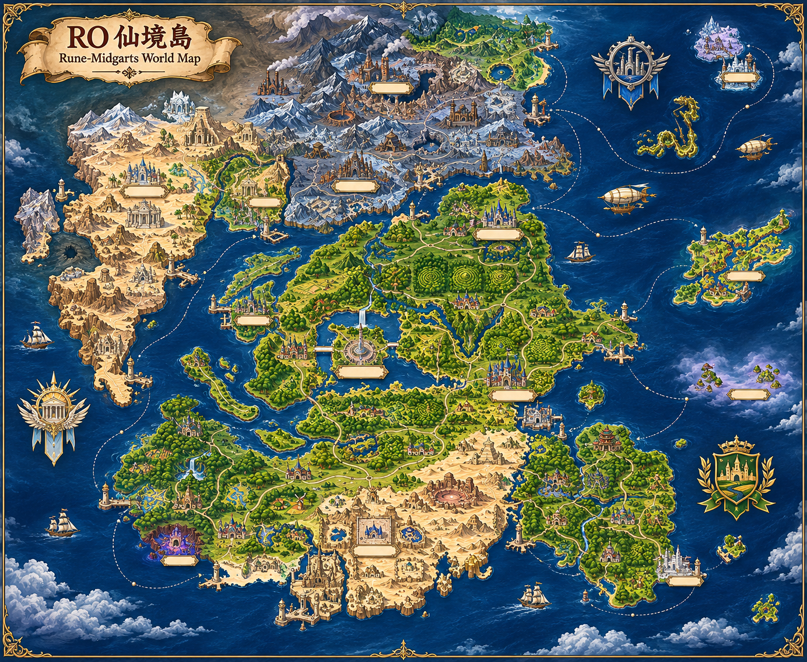

選擇城鎮，展開一段新的旅程。
六個職業，六種風格。選一位冒險者，從普隆德拉出發。
本版加入六種可選擇的 Q 版職業人物。點地、WASD、方向鍵與螢幕方向鈕皆可移動，並可更換職業或跟隨人物。世界地圖為自由探索；普隆德拉城內已加入建築碰撞與繞路，尚未加入戰鬥或多人同步。
世界地圖使用你提供的精緻底圖與立體光標。普隆德拉另有可行走的 3D 城內，包含城門、噴水池、王宮、大教堂與商店街；其餘城市的城內場景尚待製作。
目前城市座標是配合這張概念底圖的初步配置，並非遊戲內的官方座標。外域與新區域先列入索引，位置確認後再放上地圖。
介紹依你提供的清單整理。「菲音斯」重複條目先合併，所屬及譯名保留待核對；「貓咪島／綿綿島」及「呼德姆／諾斯哈根」也保留待確認註記。
你提供的魔物與職業參考圖保留在專案 references 資料夾，不包含在網站壓縮包。本版不建立魔物資料。
這張註解圖是街道、廣場與設施位置的參考；另可進入 3D 城內，操控人物探索。
圖片由你提供 · 普隆德拉介紹（巴哈姆特）↗